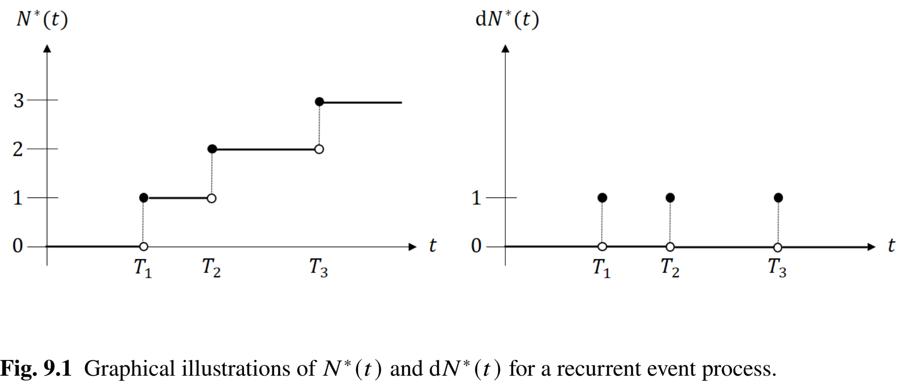
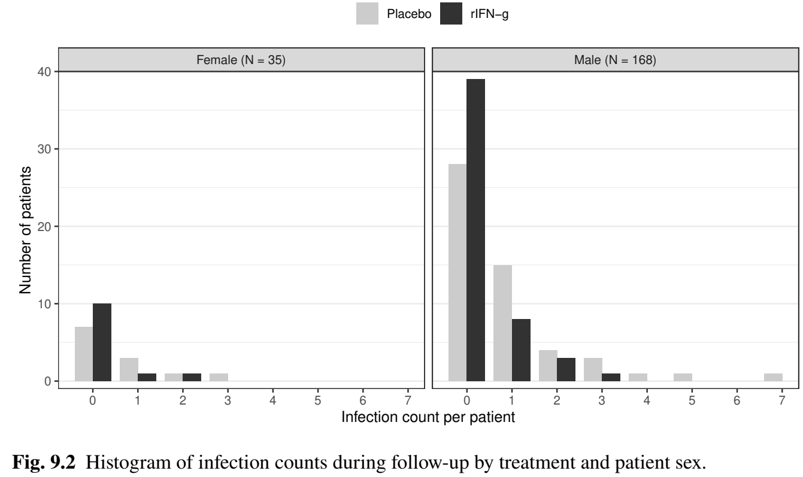
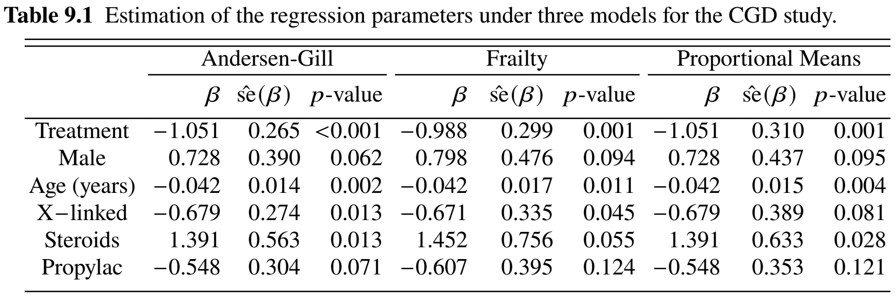
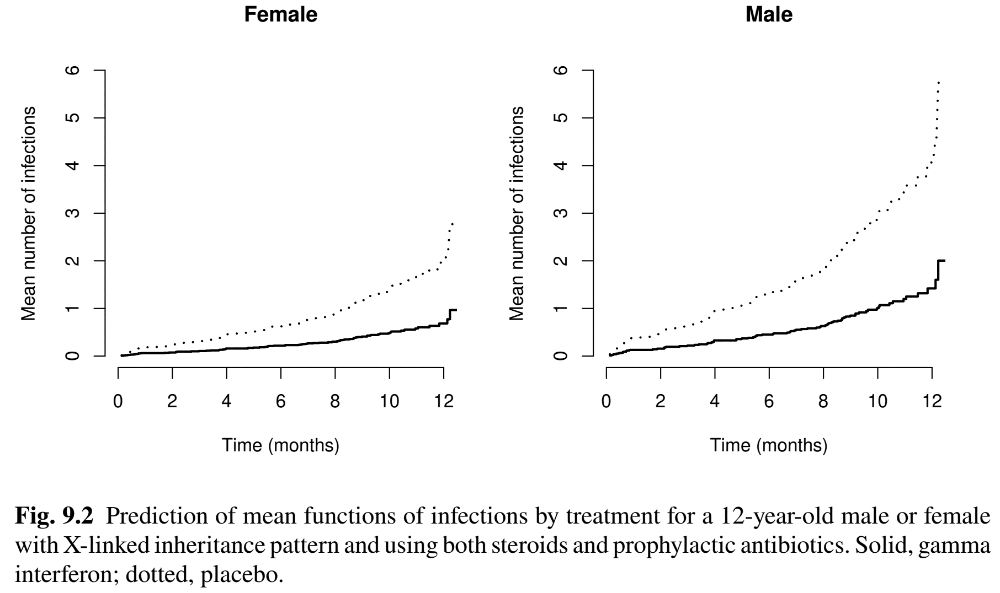
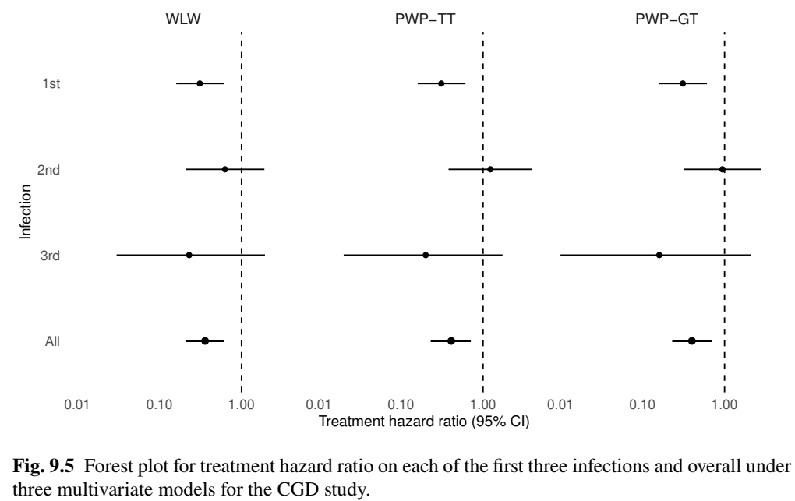
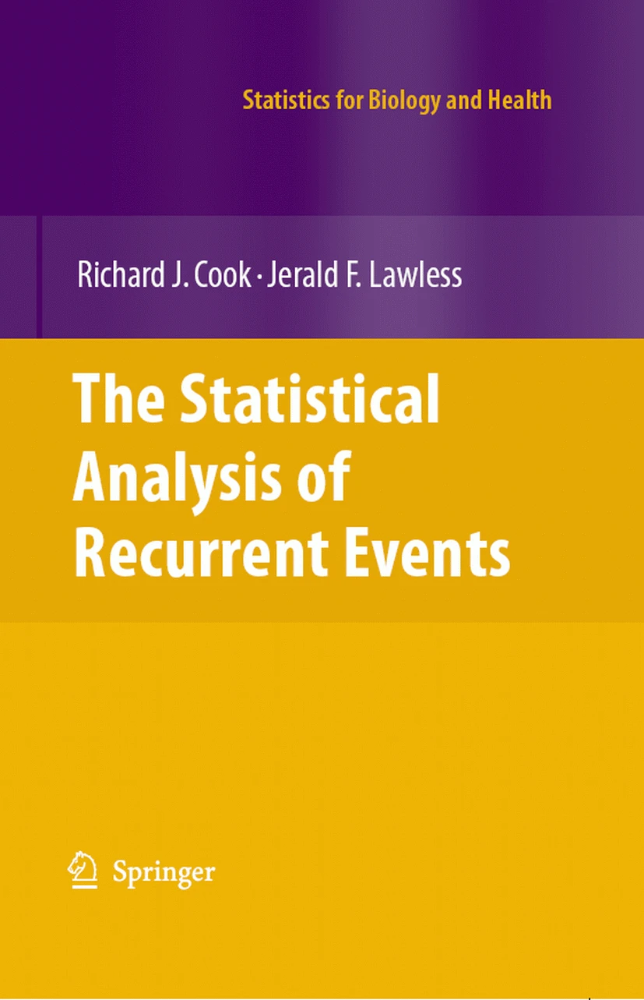

cgd
# id tstart tstop status treat sex age height weight inherit
# 1 0 219 1 rIFN-g female 12 147.0 62.0 autosomal
# 1 219 373 1 rIFN-g female 12 147.0 62.0 autosomal
# 1 373 414 0 rIFN-g female 12 147.0 62.0 autosomal
# 2 0 8 1 placebo male 15 159.0 47.5 autosomal
#...Applied Survival Analysis
Chapter 9 - Recurrent Events
Outline
Intensity and rate/mean functions
Cox-type models for recurrent events
Analysis of the Chronic Granulomatous Disease Study
Multivariate approaches to recurrent events
\[\newcommand{\d}{{\rm d}}\] \[\newcommand{\T}{{\rm T}}\] \[\newcommand{\dd}{{\rm d}}\] \[\newcommand{\pr}{{\rm pr}}\] \[\newcommand{\var}{{\rm var}}\] \[\newcommand{\se}{{\rm se}}\] \[\newcommand{\indep}{\perp \!\!\! \perp}\] \[\newcommand{\Pn}{n^{-1}\sum_{i=1}^n}\]
Intensity and Marginal Rate
Recurrent Events
Repeated occurrences of an adverse event
- Infections (CGD)
- Tumor occurrences
- Hospitalizations
- Episodes of CV events: chest pain (angina), irregular heart beat (tachycardia)
- Naive approach: time to first event
- Recurrent event process
- Statistically more efficient
- Fuller picture of patient experience
- Challenges: correlation, multiple events
Outcome Data
- Target of inference
- \(N^*(t)\): number of recurrent events by \(t\)
- \(N^*(t)=\sum_{k=1}^\infty I(T_k\leq t)\)
- \(T_1<T_2<\cdots\): recurrent event times
- \(N^*(t)\): number of recurrent events by \(t\)

Intensity Function
- Modeling recurrent events
- Intensity: conditional incidence given history
- Rate: marginal incidence across population
- Intensity: Current risk given event history \[\begin{equation}\label{eq:rec:intensity}
\ell\{t\mid \overline{N}^*(t-)\}\dd t=E\{\dd N^*(t)\mid \overline{N}^*(t-)\}
\end{equation}\]
- \(\overline{N}^*(t-)=\{N^*(u):0\leq u < t\}\)
- Univariate case \[
\ell\{t\mid \overline{N}^*(t-)\}=I(T\geq t)\lambda(t)\dd t
\]
- Intensity \(=\) an extension of hazard
Example: Poisson Process
- Independent events \[\begin{equation}\label{eq:rec:poisson}
E\{\dd N^*(t)\mid \overline{N}^*(t-)\}=\ell(t)
\end{equation}\]
- Current risk \(\ell(t)\) independent of past
- Homogeneous Poisson: \(\ell(t) = \lambda\)
- Generally unrealistic in medical applications
- More previous events \(\to\) higher current risk
- Current risk \(\ell(t)\) independent of past
- Poisson properties
- \(N^*(t_{j}) - N^*(t_{j-1})\), number of events in \((t_{j-1}, t_{j}]\) \((j=1, 2, \ldots)\), are mutually independent Poisson with mean \(\int_{t_{j-1}}^{t_j}\ell(u)\dd u\)
- \(N^*(t_{j}) - N^*(t_{j-1})\), number of events in \((t_{j-1}, t_{j}]\) \((j=1, 2, \ldots)\), are mutually independent Poisson with mean \(\int_{t_{j-1}}^{t_j}\ell(u)\dd u\)
Rate Function
- Rate: Marginal incidence \[\begin{equation}\label{eq:rec:rate}
r(t)\dd t=E\{\dd N^*(t)\}
\end{equation}\]
- Mean: Average number of events \[\begin{equation}\label{eq:rec:mean} \mu(t)=E\{N^*(t)\}=\int_0^t r(u)\dd u \end{equation}\]
Rate vs intensity \[ r(t)=E\left[\ell\{t\mid \overline{N}^*(t-)\}\right] \]
- Poisson process: \(r(t)=\ell(t)\)
One-Sample Estimation of Mean
- Observed data \[\begin{equation}\label{eq:rec:obs}
\{N_i(\cdot), C_i, Z_i\},\hspace{10mm}i=1,\ldots, n
\end{equation}\]
- \(N(t)=N^*(t\wedge C)\); \(C\): independent censoring time
- No terminal event like death \(\to\) \(C\) always observed
- Nelsen-Aalen-type estimator for mean \[
\hat\mu(t)=\int_0^t\frac{\sum_{i=1}^n\dd N_i(u)}{\sum_{i=1}^n I(C_i\geq u)}
\]
- \(\hat\mu(t)\to \int_0^t\frac{E\{\dd N(u)\}}{\pr(C\geq u)}=\int_0^t\frac{\pr(C\geq u)E\{\dd N^*(u)\}}{\pr(C\geq u)}=\int_0^t r(u)\dd u=\mu(t)\)
Proportional Intensity/Rates Models
Proportional Intensity (Andersen-Gill)
- Three classes of models (handle correlations)
- Proportional intensity (by time-varying covariates)
- Shared frailty (by subject-specific frailty)
- Proportional rates (by robust inference)
- Proportional intensity (Andersen & Gill, 1982) \[\begin{equation}\label{eq:rec:AG_model}
E\{\dd N^*(t)\mid \overline N^*(t-), \overline Z(t)\}=\exp\left\{\beta^\T Z(t)\right\}\dd\mu_0(t)
\end{equation}\]
- \(\beta\): log-intensity (risk) ratio
- Dependence on past events fully explained by \(Z(t)\) (modulated Poisson)
- Define \(Z(t)\) to summarize \(\overline N^*(t-)\), e.g., \(N^*(t-)\): number of past events
- Complicates causal interpretation in randomized trials
Andersen-Gill: Cox Extension
- Estimation and inference
- Same as Cox model with (internal) time-varying covariates
- Partial-likelihood score \[\begin{equation}\label{eq:rec:score}
U_n(\beta)=n^{-1}\sum_{i=1}^n\int_0^\infty \left\{Z_i(t)- \frac{\sum_{j=1}^n I(C_j\geq t)Z_j(t)\exp\{\beta^\T Z_j(t)\}}{\sum_{j=1}^n I(C_j\geq t)\exp\{\beta^\T Z_j(t)\}}
\right\}\dd N_i(t)
\end{equation}\]
- Full martingale properties
- Breslow estimator \[\begin{equation}\label{eq:rec:breslow} \hat\mu_0(t)=\int_0^t\frac{\sum_{i=1}^n\dd N_i(u)}{\sum_{i=1}^n I(C_i\geq u)\exp\left\{\hat\beta^\T Z_i(u)\right\}} \end{equation}\]
Marginal Proportional Rates (LWYY)
- Proportion rates (Lin, Wei, Yang & Ying, 2000; LWYY) \[\begin{equation}\label{eq:rec:rate_pr}
E\{\dd N^*(t)\mid \overline Z(t)\}=\exp\{\beta^\T Z(t)\}\dd\mu_0(t)
\end{equation}\]
- Modeling marginal rate rather than intensity
- Baseline \(Z\) \(\to\) proportional means model \[\begin{equation}\label{eq:rec:rate_pm}
E\{N^*(t)\mid Z\}=\exp(\beta^\T Z)\mu_0(t)
\end{equation}\]
- \(Z = 1, 0\): treated experience \(\exp(\beta)\) as many events as untreated
- Estimation and inference
- Partial-likelihood score as estimating function (same estimates as AG)
- Robust (sandwich) variance (different \(\se\) than AG)
Software: survival::coxph() (I)
- Input data format
- Proportional intensity (Andersen-Gill)
(start, stop): time period between previous and current events- No need for subject
idas correlation presumably captured by covariates
coxph(Surv(start, stop, status) ~ covariates)Software: survival::coxph() (II)
- Shared-frailty proportional intensity
- Subject
idfor frailty
- Subject
# Gamma frailty
coxph(Surv(start, stop, status) ~ covariates +
frailty(id, distribution = "gamma"))- Proportional rates/means (LWYY)
- Subject
idfor empirical evaluation of clustering - Use
se2in results for robust standard error
- Subject
coxph(Surv(start, stop, status) ~ covariates + cluster(id))Chronic Granulomatous Disease Study
Study Background
- Study information
- Population: a placebo-controlled randomized trial on 128 Chronic Granulomatous Disease (CGD) patients
- Aim: evaluate effect of gamma interferon on incidence of repeated CGD infections
- Baseline risk factors
- treatment (
treat; rIFN-g vs placebo) - sex (
sex) - age (
age; years) - pattern of inheritance (
inherit; autosomal recessive or X-linked) - use of steroids (
steroids; Yes/No) - use of prophylactic antibiotics (
propylac; Yes/No)
- treatment (
Descriptive Outcomes
- Infection counts

Regression Results (I)
- Fit three multiplicative models
# Andersen-Gill model
obj_AG <- coxph(Surv(tstart, tstop, status) ~ treat + sex + age +
inherit + steroids + propylac, data = cgd)
# Frailty model
obj_frail <- coxph(Surv(tstart, tstop, status) ~ treat + sex + age +
inherit + steroids + propylac +
frailty(id, distribution = "gamma"), data = cgd)
# Proportional mean model (LWYY) - recommended
obj_pm <- coxph(Surv(tstart, tstop, status) ~ treat + sex + age +
inherit + steroids + propylac + cluster(id), data = cgd)
summary(obj_pm)
# coef exp(coef) se(coef) robust se z Pr(>|z|)
# treatrIFN-g -1.05140 0.34945 0.26500 0.31031 -3.388 0.000703 ***
# sexmale 0.72832 2.07159 0.39044 0.43676 1.668 0.095405 .
# ...Regression Results (II)
- LWYY (recommended)
- Patients treated by gamma interferon on average experience \(\exp(-1.051) = 35.0\%\) as many infections as those taking placebo (\(p\)-value 0.001)

Prediction of Mean Frequency
- LWYY (recommended)

Multivariate Approaches
Modeling Choices
- Multivariate times
- Total times: Time from beginning (randomization) to event \[T_1 < T_2 < T_3 < \cdots \]
- Gap times: Time from last to current event \[ U_1 = T_1,\,\, U_2 = T_2 - T_1,\,\, U_3 = T_3 - T_2,\,\, \ldots \]
- Three classes of models
- Marginal total times (Wei, Lin, and Weissfeld, 1989; WLW)
- Conditional total times (Prentice, Williams, and Peterson, 1981; PWP-TT)
- Gap times (Prentice, Williams, and Peterson, 1981; PWP-GT)
Marginal Total Times (WLW)
- Model specification \[\begin{equation}\label{eq:rec:wlw}
\pr(t\leq T_k<t+\dd t\mid T_k\geq t, Z)=\exp(\beta_k^\T Z)\dd\Lambda_{k0}(t)
\end{equation}\]
- Marginal Cox model for multivariate failure times \(T_1< \ldots< T_K\)
- \(\beta_k\): population-averaged log-hazard ratio for \(k\)th occurence
- Can constrain \(\beta_1=\cdots=\beta_K\)
- Robust variance to account for correlation
Software:
order: \(k\)
# WLW coxph(Surv(stop, status) ~ covariates * strata(order) + cluster(id))
Conditional Total Times (PWP-TT)
- Model specification \[\begin{equation}\label{eq:rec:pwp_tt}
\pr(t\leq T_k<t+\dd t\mid T_{k-1}<t\leq T_k, Z)=\exp(\beta^\T Z)\dd\Lambda_{k0}(t)
\end{equation}\]
- Rationale: subject at risk for \(k\)th event only after experiencing the \((k-1)\)th
- \(\beta_k\): log-hazard ratio among those at risk for \(k\) event
- Robust variance to account for correlation
- Software:
# PWP-TT
coxph(Surv(start, stop, status) ~ covariates * strata(order) + cluster(id))Conditional Gap Times (PWP-GT)
- Model specification \[\begin{equation}\label{eq:rec:pwp_gt}
\pr(t\leq U_k<t+\dd t\mid U_k\geq t, Z)=\exp(\beta_k^\T Z)\dd\Lambda_{k0}(t).
\end{equation}\]
- A gap-time model: reset clock upon experiencing an event
- Marginal Cox model for multivariate failure times \(U_1, \ldots, U_K\)
- \(\beta_k\): log-hazard ratio for \(k\)th gap time
- Robust variance to account for correlation
- A gap-time model: reset clock upon experiencing an event
Software:
gtime:stop-start(\(U_k\))
# PWP-GT coxph(Surv(gtime, status) ~ covariates * strata(order) + cluster(id))
CGD Study: Multivariate Perspective
- Treatment effects on different occurrences

Conclusion
Notes (I)
- LWYY (Lin, Wei, Yang & Ying, 2000)
- Early explorations: Pepe and Cai (1993), Lawless and Nadeau (1995), Lawless et al. (1997)
- PWP (Prentice, Williams, and Peterson, 1981)
- Original version conditioned on event history
- Robust versions are presented here
Notes (II)
Parametric models
- Poisson regression
glm(count ~ covariates + offset(log(follow_up)), family = poisson)- Zero-inflated Poisson
pscl::zeroinfl(count ~ covariates1 + offset(log(follow_up)) # Poisson sub-model | covariates2 # Logistic sub-model for excess zeros )- Negative binomial
MASS::glm.nb(count ~ covariates + offset(log(follow_up)))
Notes (III)
- Cook and Lawless (2007)

Summary (I)
- Proportional intensity (Andersen-Gill)
- Handles correlation by (internal) time-varying covariates
coxph(Surv(start, stop, status) ~ covariates)
- Shared-frailty
- Handles correlation by subject-level frailty
coxph(Surv(start, stop, status) ~ covariates + frailty(id, distribution = "gamma"))
- Proportional rates (LWYY) - recommended
- Handles correlation empirically via robust variance
coxph(Surv(start, stop, status) ~ covariates + cluster(id))
Summary (II)
- Multivariate approaches
- Marginal total times (WLW)
- Conditional total times (PWP-TT)
- Gap times (PWP-GT)
- Software: reorganize/transform data and tweak
coxph()for multiple failure times